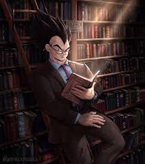

¡Bienvenido a la sección de manwhuas! Aquí encontrarás una selección de manwhuas fascinantes para todos los gustos. Desde novelas emocionantes hasta historias de acción y aventura, tenemos algo para cada lector. Explora nuestra colección y sumérgete en el maravilloso mundo de las historias gráficas. ¡Disfruta de tus aventuras literarias!
| Manwhua | Descripción |
|---|---|
| El Clase Desastre | Era el mayor héroe de la Tierra. "Pero está muerto. ¿Cómo podría volver el tipo que hemos matado?" "No lo sé. Pero si puede volver, déjalo". ¿Realmente volví después de 20 años? "¿Por qué estás tan sorprendido? ¿Qué? ¿Hiciste algo para herir tu conciencia?" Bastardos. Sólo esperen. |
| Cazador Suicida de Clase SSS | En la misteriosa Torre similar a una mazmorra de juegos de rol, Kim Gong-ja vive una existencia mundana envidiando a todos los cazadores estrellas. Un día, su mayor deseo se cumple con una habilidad legendaria para copiar las habilidades de otros… a costa de su propia vida. ¡Antes de que pueda entenderlo, es asesinado por el cazador número 1, el Emperador de las Llamas! Pero esto activa su habilidad y ahora ha copiado una nueva, la capacidad de viajar en el tiempo al morir. ¿Cómo usará Gong-ja estas habilidades para superar a la competencia y llegar a la cima? |
| Jitsu wa Ore, Saikyou deshita? | Un chico renace en otro mundo para tener una vida pacífica. Un bebé nacido de poder y realeza, abandonado en el bosque por tener un poder que no puede ser comparado ni por los radares modernos (no, no esta ni cerca de sobrepasar los 9000). ¿Qué hara para obtener la vida pacífica que él tanto desea?" |
| Player | Heo Seol-Jin, un estudiante común y tímido, es transportado a un mundo de juego tras escribir un comentario en un webtoon. Allí debe luchar, crecer y ascender en un sistema de rankings para sobrevivir. |
| Que Abundante Cosecha, Señor Demonio | Me he vuelto el Señor Demonio, el jefe final en un juego, pero... ¿Si invado el mundo humano? Seré eliminado por el protagonista de nivel máximo que crié. ¿Si detengo la invasión? Seré devorado por mis generales demonio hambrientos. ...Por lo tanto, la única respuesta es cultivar. |
| El Stream Reencarnado | Narukami Subaru, un jugador legendario que muere traicionado por su amigo, renace 20 años en el futuro con todos sus recuerdos intactos. En esta nueva era, su traidor ahora es considerado el mejor jugador. Para descubrir la verdad y vengarse, Subaru decide volverse más fuerte usando un método inesperado: convertirse en streamer. Aunque muchos imitan su antiguo estilo, él está decidido a demostrar que es el auténtico y recuperar lo que perdió. |